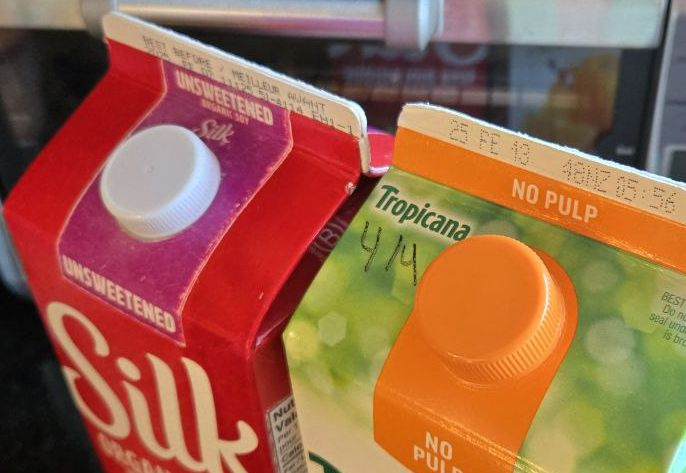
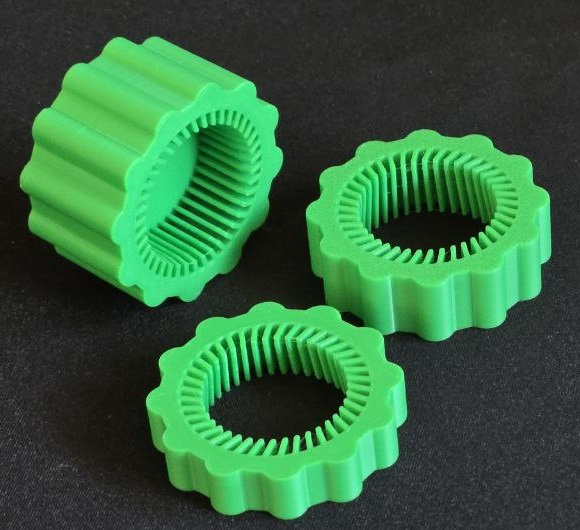
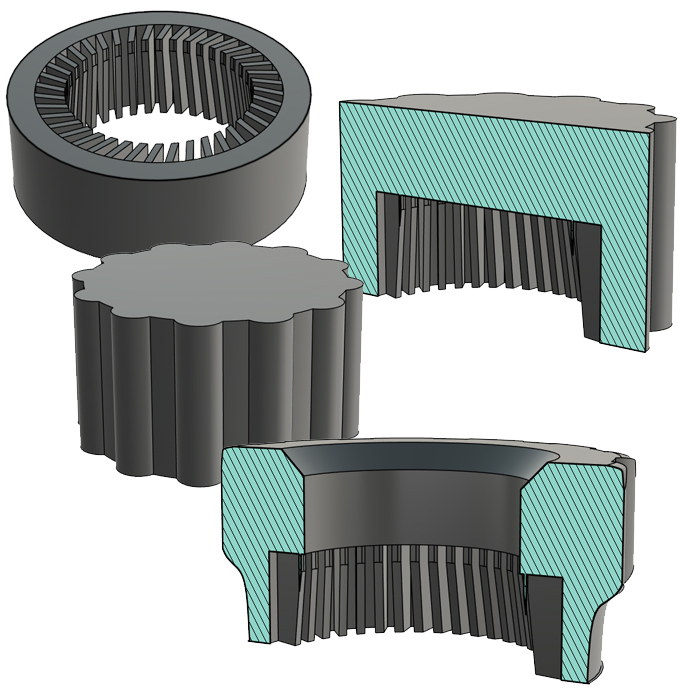

01 / 3D printing / Everyday tools
TwistAssist.
A little extra grip.
A little less frustration.
A simple fix for tight caps
This tool is designed to help make opening carton caps a little easier. Whether you have large fingers or tiny fingers, it provides a simple, effective way to remove tight caps without the usual frustration.
Download on Thingiverse

The process
Finding the right fit
A few revisions to get the fit and feel right.




The result
The final model


Next project / 02Home Assistant Floorplan